El ecosistema para construir agentes
Plataformas, frameworks, SDKs y estándares abiertos. Y por qué este curso usa LangGraph y LangChain.
Un agente es un modelo que usa herramientas en un ciclo
Definición de LangChain: «An agent is a model calling tools in a loop until a given task is complete». docs.langchain.com
Qué resuelve un framework de agentes
El ciclo
Repite modelo y herramienta hasta terminar, con un límite de pasos.
Las herramientas
Las define, las conecta y maneja sus errores.
La memoria
Guarda la conversación y el estado de la tarea.
La integración
Conecta modelos, datos y otros sistemas.
Tres niveles de abstracción
Los tres resuelven el mismo ciclo.
Cambia cuánto escribes y cuánto controlas.
- Arriba: más abstracción, menos control.
- Abajo: más control, más trabajo.
- El curso trabaja en la capa de abajo, con LangGraph y LangChain.
Plataformas low-code
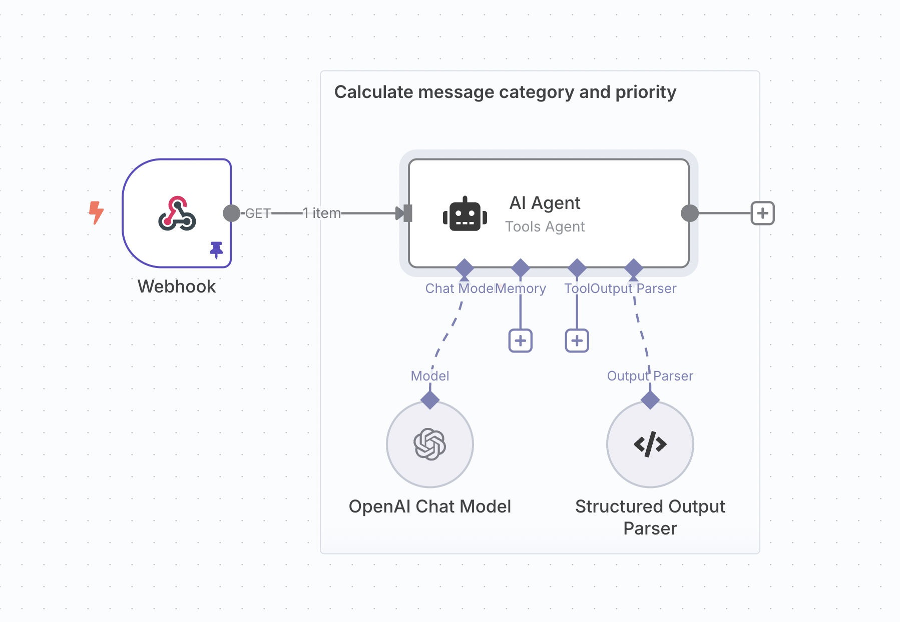
Construyes el agente con bloques en un lienzo.
- n8n: su nodo AI Agent decide qué herramienta llamar.
- Make: agentes con instrucciones, conocimiento y herramientas.
- Zapier: agentes que trabajan con miles de aplicaciones.
Sirven para automatizar rápido. Dan menos control sobre cada paso.
Captura: n8n Docs, un flujo que clasifica tickets de soporte con un nodo AI Agent. docs.n8n.io
Así se ven Make y Zapier
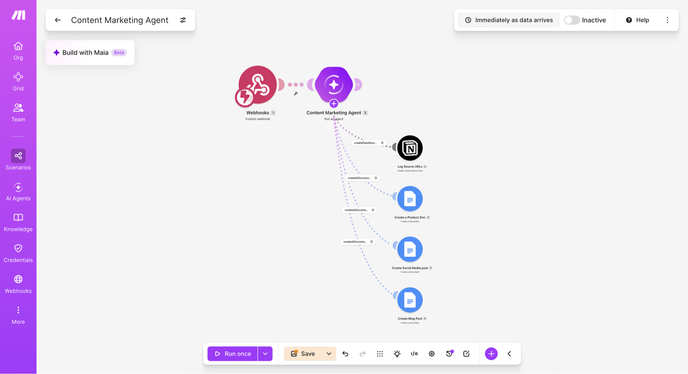
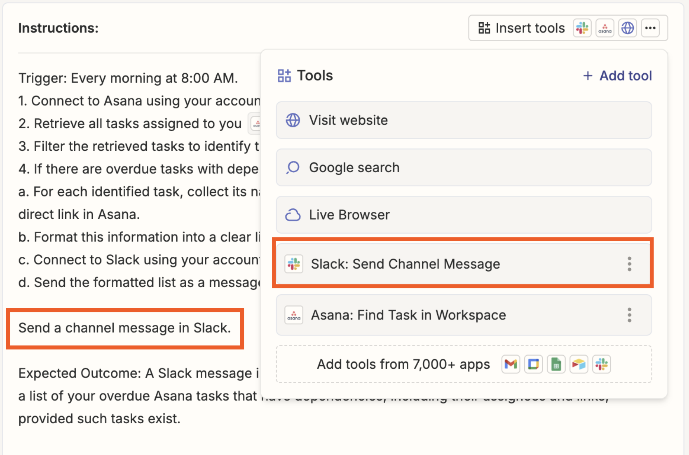
Capturas: Make (2026), make.com/en/ai-agents; Steph Spector, blog de Zapier (2025), zapier.com.
Licencias y planes gratuitos
| Plataforma | Modelo de licencia | Plan gratuito |
|---|---|---|
| n8n | Sustainable Use License: uso interno o no comercial | Community autoalojada, sin costo. La nube no tiene plan gratuito |
| Make | Servicio propietario, cobra por créditos | 1 000 créditos al mes |
| Zapier | Servicio propietario, cobra por actividades | Agents: 400 actividades al mes |
Fuentes: n8n.io/pricing, centro de ayuda de Make (help.make.com) y zapier.com/pricing. Consultadas el 14 de noviembre de 2026.
Frameworks de código
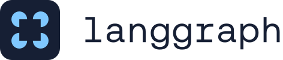
LangGraph
Orquesta agentes con grafos y estado.
LangChain
Piezas para modelos, herramientas y agentes.
CrewAI
Equipos de agentes con roles.
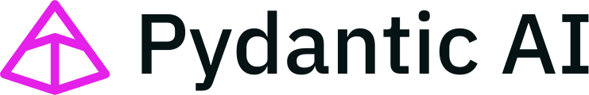
Pydantic AI
Agentes con tipos y salidas validadas.
smolagents
Agentes mínimos que actúan con código.
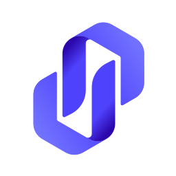
Microsoft Agent Framework
Sucesor de AutoGen y Semantic Kernel.
Logotipos de los repositorios oficiales: LangGraph, LangChain, CrewAI, Pydantic AI, smolagents y Microsoft. Solo identifican cada proyecto.
Versiones y licencias
| Proyecto | Versión | Licencia | Estado |
|---|---|---|---|
| LangGraph | 1.2.22 | MIT | Activo |
| LangChain | 1.5.0 | MIT | Activo |
| CrewAI | 1.15.41 | MIT | Activo |
| Pydantic AI | 2.68.0 | MIT | Activo |
| smolagents | 1.26.0 | Apache-2.0 | Sin versiones nuevas desde mayo de 2026 |
| Microsoft Agent Framework | 1.26.0 | MIT | Activo |
Fuentes: PyPI y GitHub de cada proyecto, consultados el 14 de noviembre de 2026.
SDKs de proveedores
OpenAI Agents SDK
Agentes, traspasos, guardrails y trazas. Funciona con muchos modelos.
Claude Agent SDK
El arnés de Claude Code como biblioteca. Solo con modelos Claude.
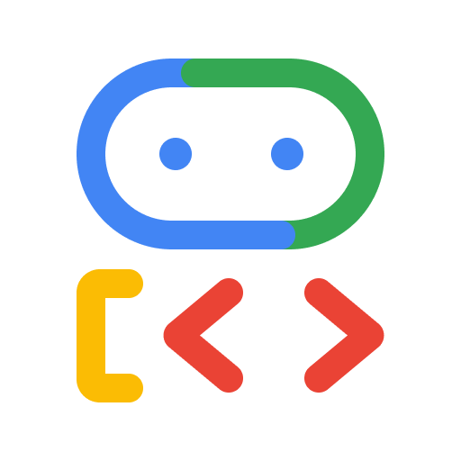
Google ADK
Optimizado para Gemini, pero acepta otros modelos.
El proveedor ya resolvió el ciclo. Tú configuras instrucciones y herramientas.
Logotipos: OpenAI y Claude en Wikimedia Commons (1, 2); ADK en su repositorio. Solo identifican cada SDK.
.svg){kind=link}

Así se ven los SDKs por dentro
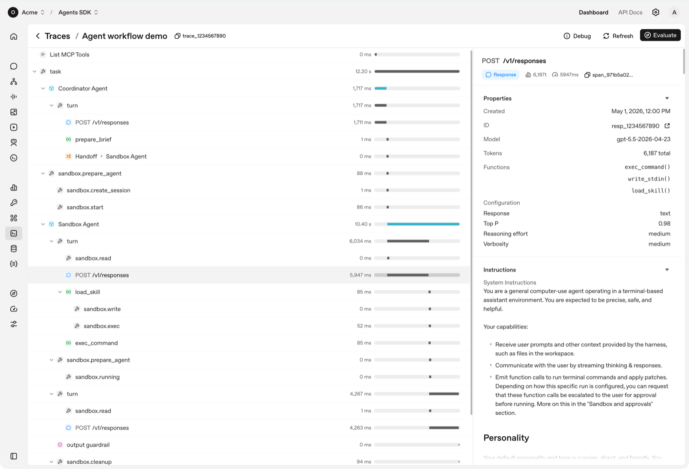
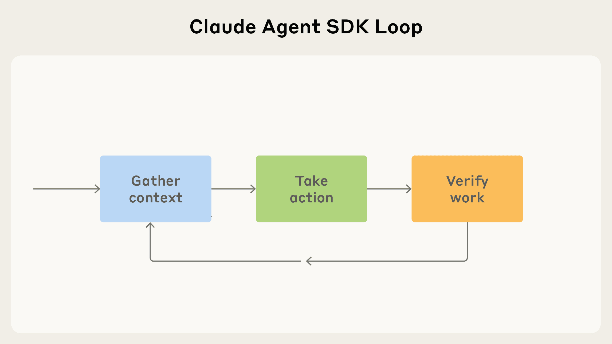
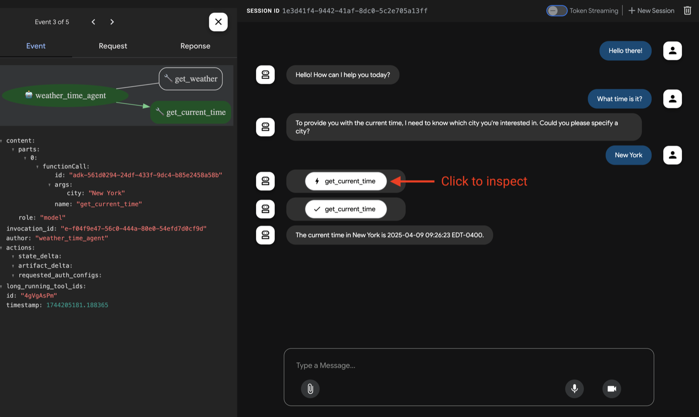
Fuentes: OpenAI; Anthropic (2025), Building agents with the Claude Agent SDK; Google ADK Docs.
Versiones y licencias de los SDKs
| SDK | Versión | Licencia | Modelos |
|---|---|---|---|
| OpenAI Agents SDK | 0.24.0 | MIT | OpenAI y más de 100 modelos de otros proveedores |
| Claude Agent SDK | 0.2.182 | Código MIT. Su uso se rige por los términos comerciales de Anthropic, y la CLI que trae empaquetada no es MIT | Solo Claude |
| Google ADK | 2.14.1 | Apache-2.0 | Optimizado para Gemini; acepta otros |
Fuentes: PyPI y GitHub de cada SDK, consultados el 14 de noviembre de 2026.
Un mismo agente en los tres niveles
Entorno gráfico
Conectas bloques. La plataforma ejecuta el ciclo.
Con un SDK
Configuras el agente. El ciclo ya viene hecho.
En un grafo El curso
Dibujas cada paso y cada ruta. Ves todo.
Estándares abiertos: MCP, A2A y Agent Skills
- MCP conecta un agente con herramientas y datos.
- A2A conecta un agente con otros agentes.
- Agent Skills empaqueta instrucciones y recursos que el agente carga cuando los necesita.
- Con un estándar, una herramienta sirve para muchos agentes.
Los diagramas oficiales
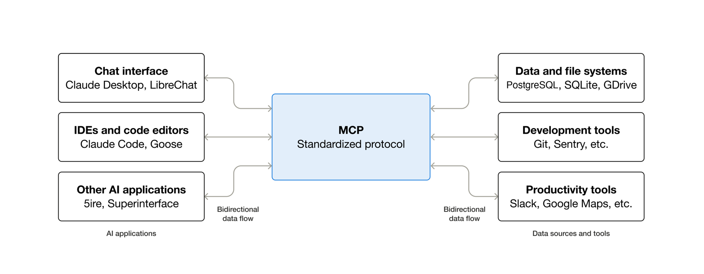
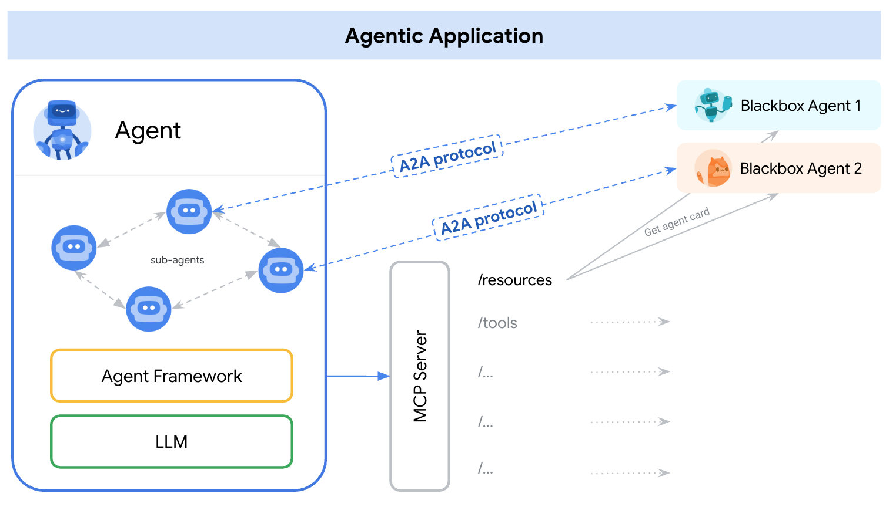
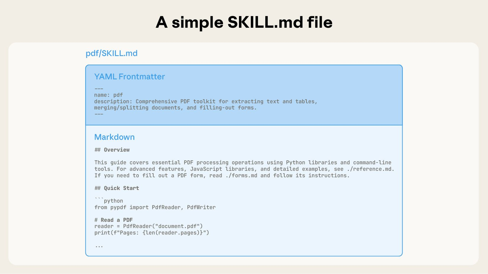
Fuentes: MCP, CC BY 4.0; A2A, Linux Foundation, Apache 2.0; Anthropic (2025), Agent Skills.
Estado de los estándares
| Estándar | Qué conecta | Estado |
|---|---|---|
| MCP | Agente con herramientas y datos | Especificación del 28 de julio de 2026. La siguiente versión está prevista para marzo de 2027. Anthropic lo donó a la fundación el 9 de diciembre de 2025 |
| A2A | Agente con agente | Versión 1.0 desde marzo de 2026, con un parche 1.0.1 en mayo. Se unió a la fundación el 27 de agosto de 2026 |
| Agent Skills | Capacidades empaquetadas | Formato abierto creado por Anthropic. Donado a la fundación el 22 de octubre de 2026 |
Fuentes: modelcontextprotocol.io, a2a-protocol.org, agentskills.io y aaif.io. Consultadas el 14 de noviembre de 2026.
Cinco criterios para elegir
Costos: en low-code pagas créditos o ejecuciones. En los otros dos pagas los tokens del modelo y tu infraestructura.
Valoración orientativa del curso, a partir de la documentación de cada herramienta. No es una medición.
La crítica a los frameworks
«Las implementaciones más exitosas no usaban frameworks complejos ni bibliotecas especializadas.»
«Definir cada rama en un grafo declarativo se vuelve engorroso cuando el flujo crece. A menudo obliga a aprender lenguajes especializados.»
Un framework vale la pena si te da control y pruebas, no por moda.
Traducción del curso. La vertical trae el texto original.
Las citas originales
"Consistently, the most successful implementations weren't using complex frameworks or specialized libraries. Instead, they were building with simple, composable patterns."
"While beneficial for visual clarity, this approach can quickly become cumbersome and challenging as workflows grow more dynamic and complex, often necessitating the learning of specialized domain-specific languages."
Qué se emplea en la industria
Una señal: las descargas en PyPI de los últimos 30 días.
Ojo con el método. Las descargas no miden usuarios. Incluyen dependencias y sistemas de integración continua. Por ejemplo, instalar langchain también descarga langgraph.
Fuente: pypistats.org, sin espejos, del 15 de octubre al 13 de noviembre de 2026. Consultado el 14 de noviembre.
Por qué las descargas no son usuarios
- Cada servidor de integración continua descarga el paquete en cada prueba.
- Un paquete que es dependencia de otro suma sus descargas: langchain 1.x depende de langgraph.
- Por eso se comparan órdenes de magnitud, no cifras exactas.
Fuente: metadatos de dependencias de langchain en PyPI y pypistats.org.
Un solo grafo para flujos y agentes
En LangGraph, los dos son grafos. Puedes empezar con un flujo y volverlo agente solo donde haga falta.
El grafo de un agente en Studio
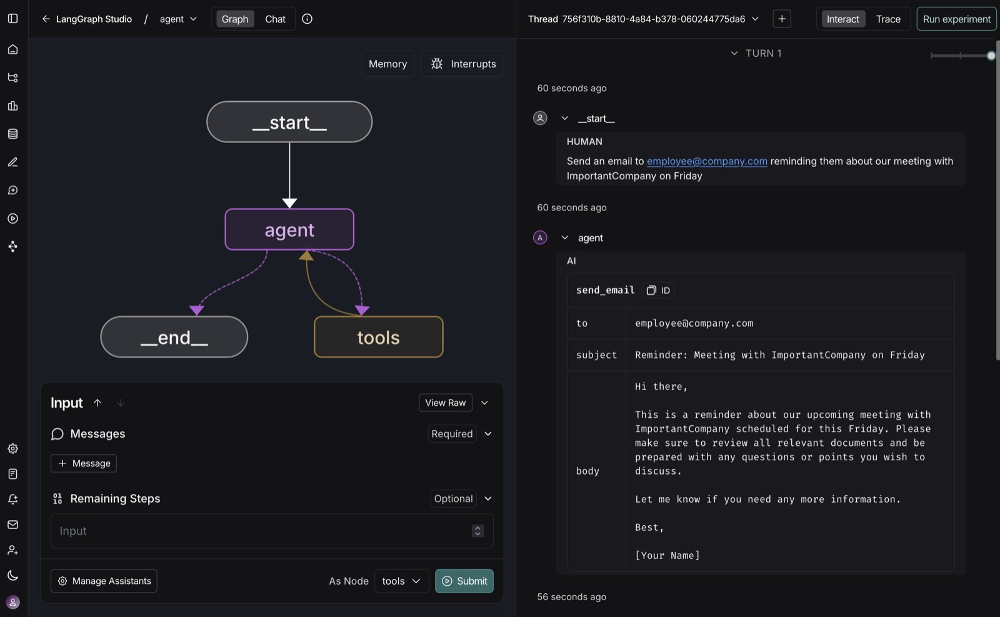
Captura: LangChain Docs, MIT. docs.langchain.com
Memoria, aprobación humana y pruebas por nodo
- Memoria: guarda la conversación y el estado de la tarea.
- Aprobación humana: el grafo se detiene y espera a una persona.
- Pruebas: cada nodo se prueba por separado.
- Licencia MIT
LangGraph en producción
Uber: AutoCover
Un agente en LangGraph genera cerca del 11 % de las pruebas nuevas de código de Uber.
Artículo revisado por pares, ICSE-SEIP 2026.
Adoptó LangGraph y lo adaptó a su infraestructura de mensajería y memoria.
Publicación de LinkedIn, 2025.
Elastic
LangGraph impulsa su generador de consultas ES|QL y su función Automatic Import.
Blog de Elastic, 2024.
Logotipos: Uber en Wikimedia Commons, LinkedIn y Elastic. Las verticales traen las citas y las arquitecturas.

Cómo están armados por dentro
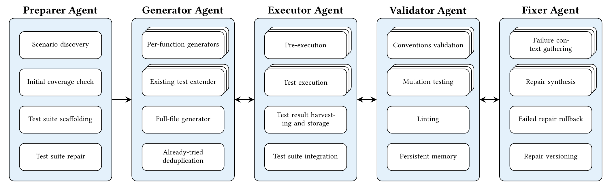
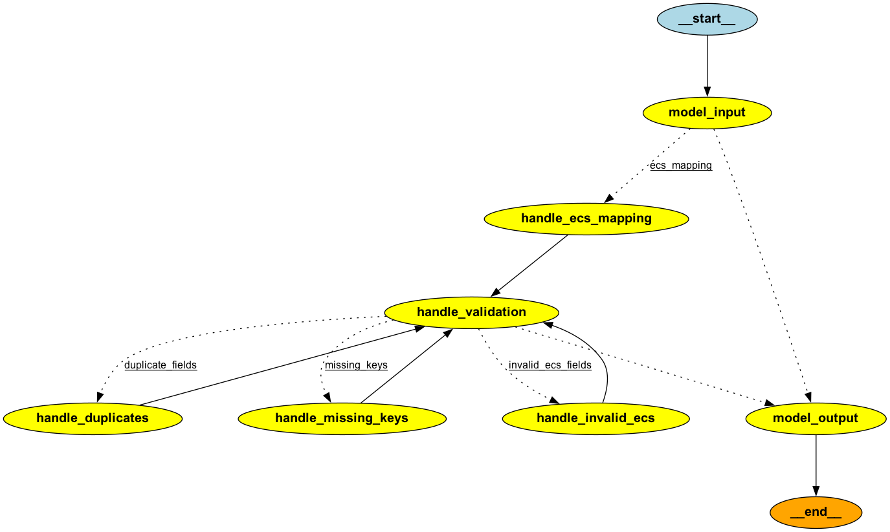
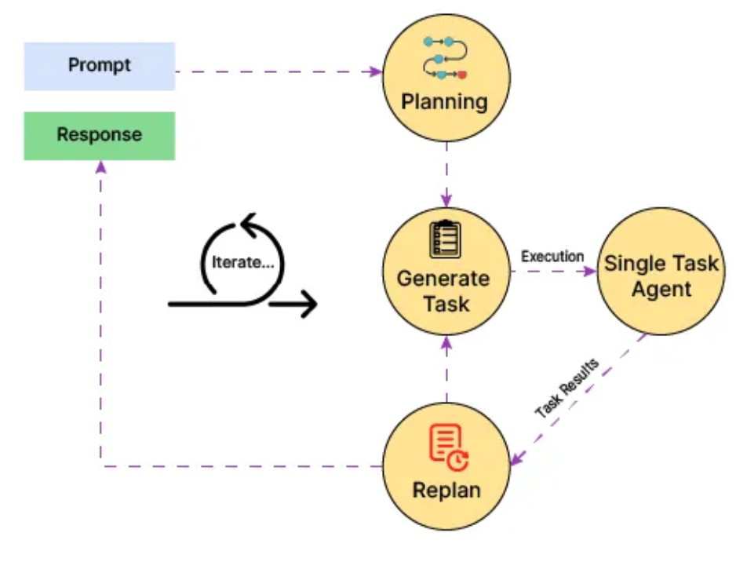
Figura adaptada (recorte) de Rastenis et al. (2026), CC BY 4.0, PDF. Elastic (2024), blog. LinkedIn (2025), news.linkedin.com.
Las fuentes de cada caso
- Uber. «AutoCover now generates about 11% of all new tests that are reviewed and added to Uber's codebase». Está construido como «a modular, agentic pipeline built on LangGraph». Rastenis et al., ICSE-SEIP 2026. PDF
- LinkedIn. «We have embraced LangGraph and adapted it to work with LinkedIn messaging and memory infrastructure using custom built providers». LinkedIn, 10 de septiembre de 2025
- Elastic. «LangGraph, a controllable agent orchestration framework, powers the end-to-end generation workflow». Elastic, 8 de agosto de 2024
Cómo vamos a trabajar
VS Code
En tu computador, con Python.
LangGraph y LangChain
En todos los laboratorios.
Datos pregrabados
Corren sin clave de API.
Clave del curso
Opcional, para correr en vivo.
Tu proyecto
Con las mismas herramientas.
El código viene escrito y explicado. Tú lo lees, lo ejecutas y lo configuras.
Referencias
Anthropic (2024, 19 de diciembre). Building effective agents. anthropic.com
OpenAI (2025). A practical guide to building agents. cdn.openai.com
LangChain. Documentación de agentes. docs.langchain.com
LangChain. Workflows and agents, documentación de LangGraph. docs.langchain.com
Rastenis, Chou, Roy Choudhary, Just (2026). Automated Software Test Generation at Industry Scale Using a Multi-Agent Architecture and Workflow Integration. ICSE-SEIP '26. PDF
LinkedIn (2025, 10 de septiembre). The LinkedIn Generative AI Application Tech Stack: Extending to Build AI agents. news.linkedin.com
Elastic (2024, 8 de agosto). How we built Automatic Import, Attack Discovery, and Elastic AI Assistant using LangChain. elastic.co
Model Context Protocol. Versiones de la especificación. modelcontextprotocol.io
A2A Protocol. a2a-protocol.org
Agent Skills. agentskills.io
Agentic AI Foundation. aaif.io
n8n. Documentación de IA. docs.n8n.io
Anthropic (2025, 16 de octubre). Equipping agents for the real world with Agent Skills. anthropic.com